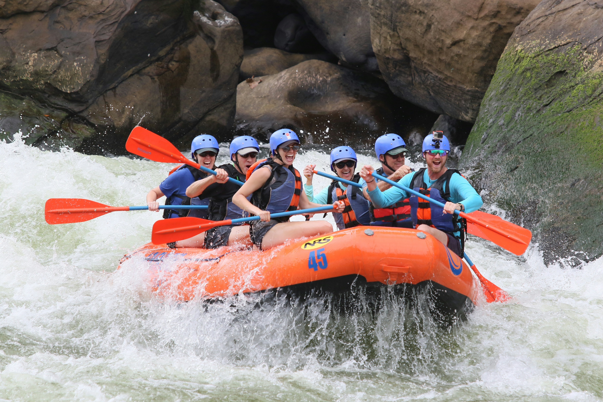

Overview
Purpose
To inform people of the aspects of white water rafting and the necessary objects to bring to have a good and safe experience.
Audience
Outdoor enthusiasts, families, and adventure seekers interested in a safe and exciting white water rafting experience.
Branding
Website Logo

Style Guide
Color Palette
| Primary | Secondary | Accent 1 | Accent 2 |
|---|---|---|---|
| 2a149b | E7C24F | A42212 | white |
Typography
Heading Font: Arial
Paragraph Font: Arial
Normal paragraph example
The best Whitewater Rafting in Colorado. Our White Water Rafting Company offers rafting on the Colorado River. We offer great prices and lots of different experiences. We have trips for families, large and small groups, and trips for the adventurous. Our rafting trips are great for beginners and experienced rafters alike.
Colored paragraph example
Trips vary from mild and great for families, to extreme and adventurous. We have trips for everyone and all skill levels. We guarantee you a great experience. At Gresko's Whitewater Rafting, we are committed to giving you a fantastic experience.
Navigation with Hover
Site Map
Wireframes
Home